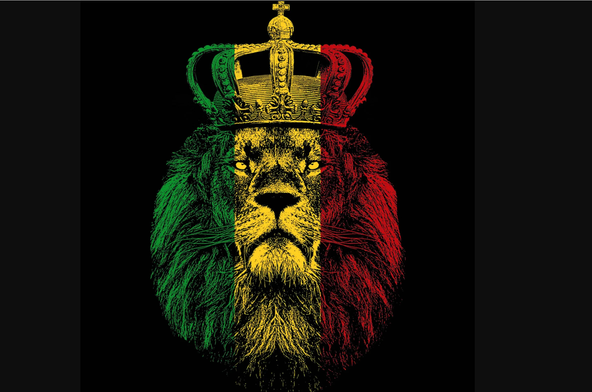
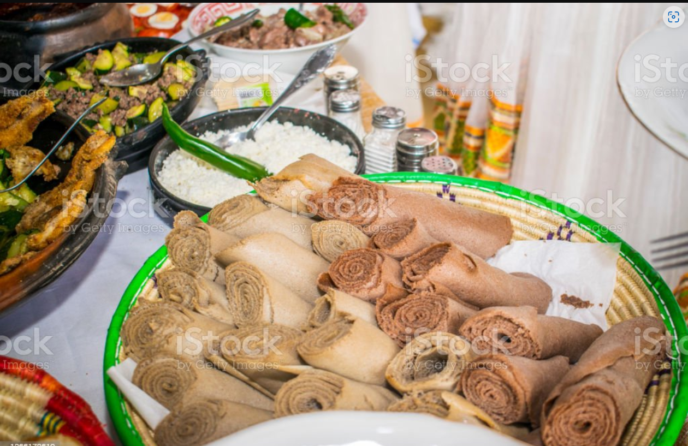

Overview
Purpose
Have you ever tasted food from Ethiopia? We're sure you liked it if you've tried it, but even if you haven't, that's okay since you came to the proper place to give it a shot for the first time
Audience
One of the world's most unique, fascinating, and appetizing cuisines is Ethiopian. Ethiopian cuisine is known for its flavorful traditional meals, stews, and spices as well as for the strong culture surrounding the serving and sharing of food with friends and family.
Branding
Website Logo

Style Guide
Color Palette
Palette URL: https://coolors.co/285e66-0c5959-12a389-1d2038-aabd8c| Primary | Secondary | Accent 1 | Accent 2 |
|---|---|---|---|
| [#285e66] | [#0c5959] | [#aabd8c] |
Typography
Heading Font: Fuzzy Bubbles
Paragraph Font: Open Sans
Normal paragraph example
this is normal paragraph example
Colored paragraph example
this is colored paragraph example
Navigation
Site Map
Content
Home page
If you're seeking for a distinctive and savory dining experience, our Ethiopian restaurant website is a must-see. Our restaurant serves authentic Ethiopian food created using traditional recipes and traditions, and our meals contain only the freshest and highest-quality ingredients. You can explore our menu on our website, which contains a variety of delicious and delectable foods that are sure to fulfill your appetite. We serve stews, curries, and grilled meats alongside injera, a classic Ethiopian sourdough flatbread that is ideal for soaking up the rich sauces and spices in our dishes.
Images for the Home page
 menu
This page displays the restaurant's menu. it will feature a list of dishes with their names, photographs, and descriptions. It should also contain the names of any spices or ingredients used in the recipes, as well as their importance in Ethiopian cuisine. Our menu is a carefully crafted selection of traditional Ethiopian dishes, made with the freshest, highest-quality ingredients.
Images for the Page 2

About Ethiopian cuisine
This page will provide a brief history of Ethiopian cuisine. It will describe the significance of injera, a spongy flatbread used in Ethiopian cuisine. It will Discuss the various spices and herbs used in Ethiopian food, as well as the health advantages of each. Tell stories or legends about Ethiopian cuisine.
Images for the Page 3
Wireframes
Create three wireframes for your site. One for each page and list them here
Home
[Any additional details about home that the wireframe does not make clear]
[Page 2]
[Any additional details about page 2 that the wireframe does not make clear]
[Page 3]
[Any additional details about page 3 that the wireframe does not make clear]